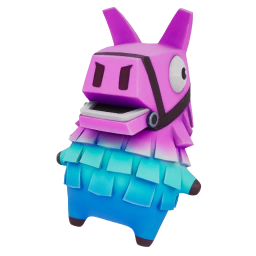

Fortnite Sprite · Legendary
Lootin' Llama Sprite in Fortnite: Ability, Variants and How to Get It
Opening Ammo Boxes has a chance to upgrade your weapon. Find it, extract it, and track every Lootin' Llama variant on the FORTNITE SPRITES TRACKER.

- Rarity
- Legendary
- Ability
- Opening Ammo Boxes has a chance to upgrade your weapon.
- Where to find
- Sprite Chests and chests across the map.
- Summon cost
- 4500 Sprite Dust
- Variants
- 5 released
- Added
- v41.30
| Variant | Drop rate | Bonus | Status |
|---|---|---|---|
| Lootin' Llama | — | Standard ability | Released |
| Gold Lootin' Llama | — | 3× elimination XP | Released |
| Gummy Lootin' Llama | — | +20% Sprite Dust | Released |
| Galaxy Lootin' Llama | — | +30% ammo | Released |
| Gem Lootin' Llama | — | Reduced fall damage | Released |
Track your Lootin' Llama Sprite collection — mark every variant you own.
Open the FORTNITE SPRITES TRACKER →What the Lootin' Llama Sprite Does
The Lootin' Llama Sprite turns every Ammo Box on the island into a small slot machine: while it rides with you, opening an Ammo Box has a chance to upgrade the weapon you are holding. Over a full match that adds up to free rarity bumps you would otherwise pay a Workbench for, which makes this companion one of the most economical picks in the roster.
It joined the game as a Legendary Sprite in the v41.30 update on July 30, 2026, arriving alongside Peeky Peely, Ironmouse, and the Reload-exclusive John Wick. Officially named the Lootin' Llama in Epic's update notes, most players simply search for it as the Llama Sprite — either way it is the same grinning piñata.
How to Get the Llama Sprite
The Llama Sprite rolls from Sprite Chests and regular chests across the map, with no published drop rate yet for any of its finishes. Treat it like the other chest-pool Legendaries: land where containers are dense, open everything, and extract the moment you secure one — at an Extraction Site, with a Portable Extractor, or by winning the match. An unextracted Llama Sprite does not count toward your collection.
Every Lootin' Llama Variant
Five finishes are live from day one: Normal (the base ability), Gold (3x bonus Sprite XP from eliminations), Gummy (+20% Sprite Dust on extraction), Galaxy (+30% more ammo on pickup), and — unusually — a Gem variant with reduced fall damage. That day-one Gem made Lootin' Llama one of the first two Sprites with a live Gem finish, alongside Grim Reaper, before the rest of the Gem tier has even released. None of the five rates are published, so expect the special finishes to be serious chase pulls.
Is the Llama Sprite Worth Chasing?
Yes, especially if you run ammo-hungry loadouts. Free weapon upgrades from a container you were opening anyway is pure value, and the effect quietly compounds across a long match. Collectors get an extra reason: with five live finishes including a rare Gem, the Llama Sprite family is one of the larger new blocks in the 111-variant collection.
Track Your Lootin' Llama Collection
Log every Llama Sprite finish you pull on the FORTNITE SPRITES TRACKER so you always know whether Gold, Gummy, Galaxy, or the Gem is still missing. The FORTNITE SPRITES TRACKER keeps your whole collection in one place and updates the day Epic adds new variants.
Frequently asked questions
What does the Llama Sprite do in Fortnite?
While the Lootin' Llama Sprite is equipped, opening an Ammo Box has a chance to upgrade the weapon you are holding — a free rarity bump with no Workbench cost.
Does the Lootin' Llama Sprite have variants?
Yes — five live finishes: Normal, Gold, Gummy, Galaxy, and a day-one Gem with reduced fall damage. It shares the first-live-Gem honor with Grim Reaper. No drop rates are published yet.
Where do I find the Llama Sprite?
It rolls from Sprite Chests and regular chests across the island. Open containers in volume and always extract your finds so they count.